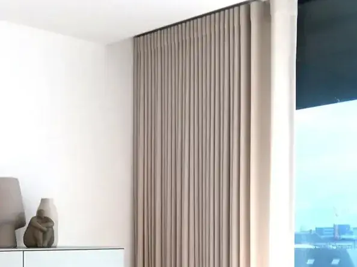
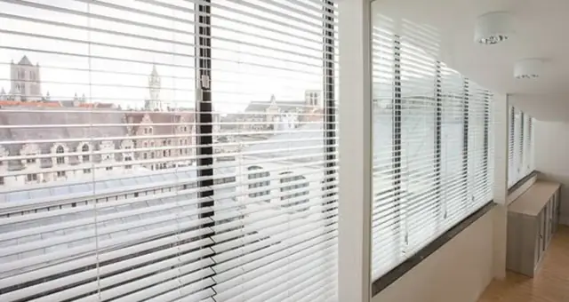
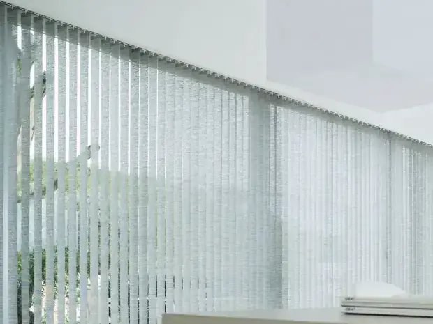

Gordijnen en lamellen op maat, mooi afgewerkt
Advies met stalen aan huis, opmeting en plaatsing door het team van Arne en Lies uit Izegem. Verschillende merken, voor ieder wat wils.
- Gratis advies en opmeting aan huis, met stalen
- Wij meten op, wij staan in voor de maat
- Plaatsing inbegrepen
Liever bellen? 0473 52 09 20 · Zelf een afspraak inplannen
4,7 op 5 op Trustpilot
Gemiddelde van alle 40 reviews over SDAD. Lees alle reviews
“… onze gordijnen zijn een streling voor het oog. We waren ook zeer tevreden, alles werd tot in de puntjes verzorgd en proper afgewerkt …”
“Ons nieuw opgeleverd appartement werd zeer vakkundig geschilderd en top perfect afgewerkt. Ook de raamdecoratie werd prima verzorgd.”
Kies op basis van uw wens
Verduisteren
Rust in de slaapkamer of kinderkamer, ook overdag.
Ons advies: verduisterende rol- of overgordijnenPrivacy
Geen inkijk, wel daglicht.
Ons advies: lichtdoorlatende stoffen, inbetweens of lamellenLicht regelen
Zelf bepalen hoeveel licht en inkijk u wenst.
Ons advies: lamellen: kantelen of opzij schuivenSfeer en akoestiek
Een warme, rustige ruimte met minder galm.
Ons advies: overgordijnen tot op de vloer
Raamdecoratie voor elke ruimte

Overgordijnen
Sfeer, warmte en een betere akoestiek. Elegant tot op de vloer.
Rol- en vouwgordijnen
Strak en praktisch, ook verduisterend voor de slaapkamer.

Lamellen
Hout, aluminium, pvc of textiel. Horizontaal of verticaal.

Elektrische bediening
Manueel of elektrisch, ideaal voor grote of hoge ramen.
Sfeerbeelden

Eén aanspreekpunt voor muren én ramen
Lies begeleidt u van het eerste contact tot de plaatsing en denkt mee over stoffen, kleuren en bediening. Omdat SDAD ook schildert, stemmen we de kleuren van muren en gordijnen perfect op elkaar af.
- Persoonlijk advies aan huis, met stalen
- Verschillende merken, voor ieder wat wils
- Wij meten op en staan in voor de maat
- Vakkundige plaatsing, volgens afspraak
In 4 stappen naar raamdecoratie op maat
- 1
Aanvraag
U vult het formulier in of belt ons.
- 2
Advies en opmeting
We komen langs met stalen, adviseren over stof, kleur en bediening en meten zelf nauwkeurig op.
- 3
Offerte
U krijgt een duidelijke offerte op maat.
- 4
Plaatsing
We plaatsen alles netjes en vakkundig.
Is de opmeting gratis en vrijblijvend?
Komen jullie zelf opmeten?
Wie is verantwoordelijk als de maat niet klopt?
Kan ik stalen bekijken?
Met welke merken werken jullie?
Wat is het verschil tussen verduisterend en lichtdoorlatend?
Wat kies ik voor de badkamer of keuken?
Wat is veilig in een kinderkamer?
Geven jullie advies over stoffen en kleuren?
Zijn elektrische gordijnen en lamellen mogelijk?
Plaatsen jullie ook?
Doen jullie ook projecten voor bedrijven?
Kan ik gordijnen combineren met lamellen?
Kunnen jullie ook schilderen?
Klaar voor raamdecoratie op maat?
Vraag uw gratis offerte aan, of laat uw nummer achter en we bellen u terug.